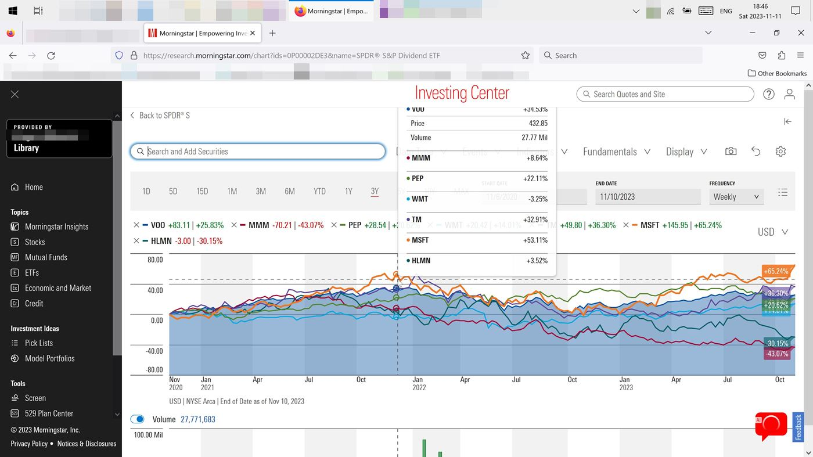
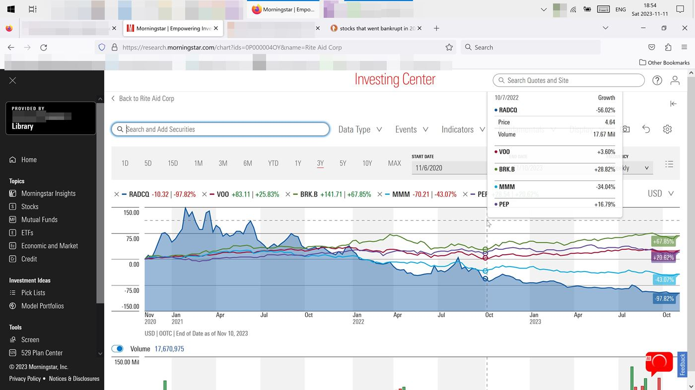

A Simple Hack to Display Total Loss in the Stock Graph
BEFORE:
Sad, the stock graph is too narrow.
The graph doesn't show $0 baseline.
Lacks perspective
See here:

In the above 'BEFORE' graph, on the very right, at the end of 3 years, the highest priced company is (MSFT) in the orange, and the lowest priced company is (MMM) in the magenta.
However what's sad and annoying is that the stock graph only shows a high of 80 and a low of 80. If I understand this means 80% loss/gain.
About even with the gray 0.00 line in the middle, (WMT) in the bright blue, ended at about the same price that it started. (minus only 3% or so)
So but the point is, the graph is narrow.
I want it to show a baseline of any company that is valued at 0$ or that lost 100%.
AFTER:
So how to widen the graph?
Logical.
Search up a company that recently went bankrupt.
He he heee.
Don't know why that's funny, should be sad.
So recently Rite Aid (RADCQ) seems to have lost 97% of its value, it tanked to pretty near $0 value.
So now see here after adding that into a similar graph:

In the above 'AFTER' graph, on the very right, at the end of 3 years, the highest priced company is (BRK.B) in the green, and the lowest priced company is (RADCQ) in the dark blue.
And it's refreshing the stock graph now shows a high of 150 and a low of 150.
It's a wide graph that gives good perspective.
In this graph, the gray 0.00 line in the middle would represent any company that ended at the same price that it started. However in this graph there isn't a company close to that. The closest ones were (VOO) and (PEP) which at the end of 3 years here both ended up about 20% higher than they started.
In conclusion, this was a simple hack to show a wider stock graph including displaying a total loss on the stock graph.